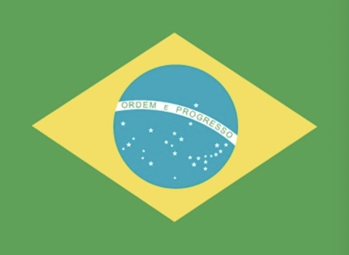

You will find here the image and information of the flag of all the countries alphabetically ordered.
three equal horizontal bands of sky blue (top), white, and sky blue; centered in the white band is a radiant yellow sun with a human face (delineated in brown) known as the Sun of May; the colors represent the clear skies and snow of the Andes; the sun symbol commemorates the appearance of the sun through cloudy skies on 25 May 1810 during the first mass demonstration in favor of independence; the sun features are those of Inti, the Inca god of the sun

green with a large yellow diamond in the center bearing a blue celestial globe with 27 white five-pointed stars; the globe has a white equatorial band with the motto ORDEM E PROGRESSO (Order and Progress); the current flag was inspired by the banner of the former Empire of Brazil (1822-1889); on the imperial flag, the green represented the House of Braganza of Pedro I, the first Emperor of Brazil, while the yellow stood for the Habsburg Family of his wife; on the modern flag the green represents the forests of the country and the yellow rhombus its mineral wealth (the diamond shape roughly mirrors that of the country); the blue circle and stars, which replaced the coat of arms of the original flag, depict the sky over Rio de Janeiro on the morning of 15 November 1889 – the day the Republic of Brazil was declared; the number of stars has changed with the creation of new states and has risen from an original 21 to the current 27 (one for each state and the Federal District)
note: one of several flags where a prominent component of the design reflects the shape of the country; other such flags are those of Bosnia and Herzegovina, Eritrea, and Vanuatu
red with a white cross that extends to the edges of the flag; the vertical part of the cross is shifted to the hoist side; the banner is referred to as the Dannebrog (Danish flag) and is one of the oldest national flags in the world; traditions as to the origin of the flag design vary, but the best known is a legend that the banner fell from the sky during an early-13th century battle; caught up by the Danish king before it ever touched the earth, this heavenly talisman inspired the royal army to victory; in actuality, the flag may derive from a crusade banner or ensign
note: the shifted cross design element was subsequently adopted by the other Nordic countries of Finland, Iceland, Norway, and Sweden
three equal vertical bands of green (hoist side), white, and red; design inspired by the French flag brought to Italy by Napoleon in 1797; colors are those of Milan (red and white) combined with the green uniform color of the Milanese civic guard
note: similar to the flag of Mexico, which is longer, uses darker shades of green and red, and has its coat of arms centered on the white band; Ireland, which is longer and is green (hoist side), white, and orange; also similar to the flag of the Cote d’Ivoire, which has the colors reversed – orange (hoist side), white, and green

three horizontal bands of red (top), yellow (double width), and red with the national coat of arms on the hoist side of the yellow band; the coat of arms is quartered to display the emblems of the traditional kingdoms of Spain (clockwise from upper left, Castile, Leon, Navarre, and Aragon) while Granada is represented by the stylized pomegranate at the bottom of the shield; the arms are framed by two columns representing the Pillars of Hercules, which are the two promontories (Gibraltar and Ceuta) on either side of the eastern end of the Strait of Gibraltar; the red scroll across the two columns bears the imperial motto of “Plus Ultra” (further beyond) referring to Spanish lands beyond Europe; the triband arrangement with the center stripe twice the width of the outer dates to the 18th century
note: the red and yellow colors are related to those of the oldest Spanish kingdoms: Aragon, Castile, Leon, and Navarre